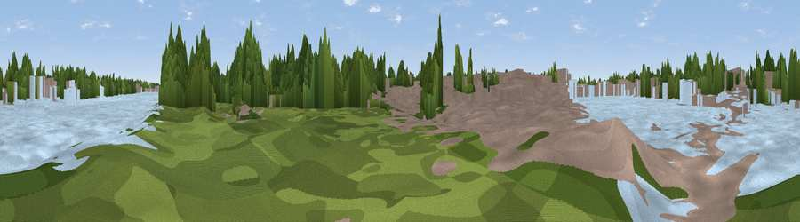

Viewpoint near City of Westminster
#45227 in England · top 78% of its area beats it · near City of WestminsterThe view, rendered

A 360° render of this exact spot computed from the terrain model, tree cover and land cover — summer colours, afternoon light, calibrated against photographs of famous viewpoints. Real trees, hedges and buildings will differ in detail.
The panorama
Grey silhouette: terrain skyline in each direction (720 bearings, Earth curvature and refraction included). Dashed green: skyline with trees (+15 m) and buildings (+8 m) as obstacles. Blue strip: how far the ground is visible on each bearing.
Where the view opens
Wedge length = distance to the farthest visible ground on that bearing (vegetation-aware). Rings at 10, 25 and 50 km.
What fills the view
44% water · 28% built-up · 26% woodland · 2% grassland
Angular shares of the visible panorama (visual magnitude), not map area. Landscape diversity 0.50 (0–1 Shannon).
Key numbers
More beautiful places nearby
The staircase of upgrades: each row has a higher view potential than everything closer. Driving times are estimates from straight-line distance, calibrated against real road routing — check an actual route before setting out.
| Place | Direction | Drive | Score |
|---|---|---|---|
| Viewpoint near Barnes | W · 5 km | ~10 min | 23.2 |
| Viewpoint near Camden Town | N · 5 km | ~11 min | 25.1 |
| Primrose Hill | N · 6 km | ~14 min | 41.6 |
| Viewpoint near Sydenham | ESE · 9 km | ~17 min | 48.5 |
| Viewpoint near Catford | ESE · 9 km | ~17 min | 51.4 |
| Viewpoint near Wood Green | NNE · 13 km | ~24 min | 51.8 |
| Viewpoint near Eltham | E · 16 km | ~28 min | 52.2 |
| Harrow on the Hill | NW · 16 km | ~28 min | 60.7 |
51.48119, -0.16564 · source: osm peak · position refined by local search. Computed location — check access rights before visiting.